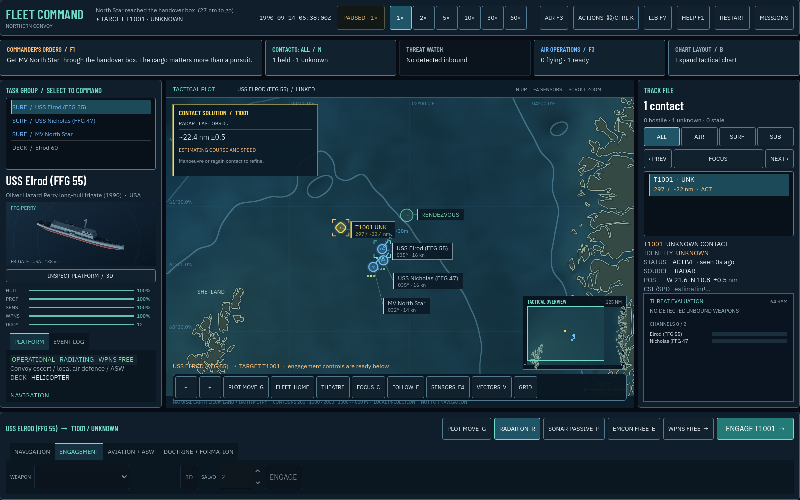

01 / CONVOY ESCORT
North Sea
Screen vulnerable shipping through contested water. Your escorts are there to get the convoy home.
Take command of a 1990 task group. Protect Atlantic shipping, search for a submarine in the GIUK gap, or keep a carrier alive under Soviet missile pressure.
Real geography. Period equipment. Four fictional operations built around the decisions a fleet commander has to make.
Desktop keyboard + mouse or trackpad · WebGL 2 · Local and browser play

Screen vulnerable shipping through contested water. Your escorts are there to get the convoy home.
Work an uncertain underwater picture at the Atlantic gateway. Use passive bearings, manoeuvre and patrol aviation to find the threat.
Operate a reduced period carrier air wing while protecting the force through a finite defensive watch.
Distinguish the opposing surface force from civilian traffic before committing your missiles.
Dedicated historical variants keep period radars, sonars, aircraft and weapons together. Modern operations remain available in their own mission filter.
Passive bearings, uncertain range, stale contacts, thermal layers and limited fire-control channels make the picture something you build.
A mission desk explains the task and first actions. The watch strip opens live orders, priority contacts, threat focus and air operations.
Select Cold War 1990, choose the convoy operation, then Read briefing and Take command. Pause whenever you need to think.
Space Pause · 1–6 Time · G Plot route · N Next contact · B Wide chart · Home Fit force · F3 Aircraft · F1 Orders · ⌘/Ctrl K Actions